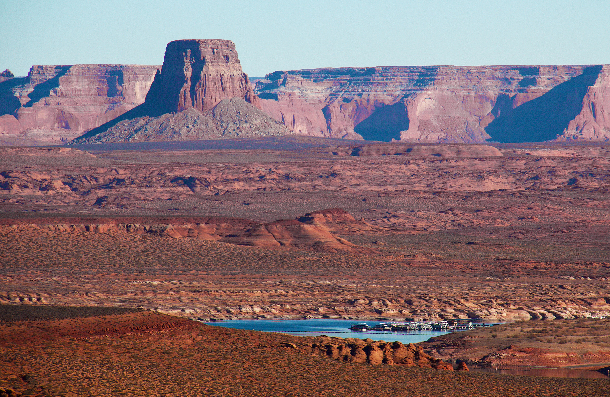

羚羊彩虹橋位於猶他州的格倫峽谷國家公園（Glen Canyon National Recreation Area）內，是世界上最大的天然石拱橋之一。這座橋橫跨科羅拉多河，長約275英尺（約84米），高約290英尺（約88米），橋面寬度達42英尺（約13米）。它的獨特之處在於，它是由紅砂岩和頁岩組成，經過數百萬年的風化和侵蝕形成的。
羚羊彩虹橋被認為是當地納瓦霍族和皮瓦韋族印第安人的聖地，他們將它視為神聖的地方。在印第安人的傳說中，這座橋是一條連接著天堂和地球的道路，是神靈們下凡的橋樑。
要到達羚羊彩虹橋，最方便的方式是從佩奇（Page）鎮出發，駕車前往格倫峽谷國家公園。在公園內，遊客可以參加導覽或自助遊覽，步行或搭乘遊船前往彩虹橋所在的一個小峽谷。遊船穿越科羅拉多河，沿途欣賞著令人驚嘆的峽谷風光。
當你接近彩虹橋時，你會被它的壯麗所震撼。彩虹橋的拱形在陽光照射下，呈現出多彩的光譜，這也是它得名的原因。無論你站在橋下還是橋頂，你都可以欣賞到壯觀的景色和宏偉的結構。
在這裡，遊客還可以參加導覽，深入了解彩虹橋的形成過程、地質歷史和當地印第安文化。導覽員會分享關於彩虹橋的有趣故事和傳說，並帶領遊客探索附近的自然景觀和生態系統。你還可以在公園內的露營地或度假村中度過一個愉快的夜晚，欣賞星空下的彩虹橋。
對於愛好攝影的遊客來說，黃石國家公園是一個理想的目的地。無論是晨昏光線中的山脈、湖泊的倒影，還是野生動物的瞬間捕捉，公園提供了豐富多樣的拍攝機會。
除了彩虹橋本身，格倫峽谷國家公園還擁有其他壯麗的景觀和活動。你可以參加划船或划艇活動，探索科羅拉多河上的壯麗峽谷。你還可以進行漂流或攀岩等冒險活動，感受自然的力量和美麗。

此外，格倫峽谷國家公園周圍還有許多其他值得探索的景點和活動。比如附近的安蒂洞穴（Antelope Canyon）和哈維達姆（Horseshoe Bend）等地，都是知名的自然奇觀。這些地方以其獨特的地質景觀和迷人的景色而聞名，吸引著來自世界各地的遊客。
總結來說，羚羊彩虹橋是美國一個非常特殊的景點，其壯麗的結構和傳說背後的神聖性質，使其成為一個值得一遊的目的地。無論你是對地質景觀感興趣，還是對印第安文化有興趣，這個地方都能帶給你難忘的體驗和美好的回憶。不論是遊覽彩虹橋，還是探索周邊的自然奇觀，你都可以在格倫峽谷國家公園找到滿足你探險和探索慾望的機會。